Si c'est la première fois, lisez le Guide rapide et le Glossaire : en 5 minutes vous volerez avec Nova. Ensuite, le manuel parcourt le programme section par section, dans le même ordre que son menu, avec de vraies captures d'écran. Vous l'avez aussi dans NOVA AI : le bouton 📖 Consulter le manuel.
Les phrases que vous pouvez dire à Nova ressemblent à ceci : « Nova, sors le train d'atterrissage ». Les touches, à ceci : Insert. Les boutons et les sections du programme sont en gras, et les chemins de dossiers en format code.
Cinq étapes et vous pourrez parler à Nova dans Star Citizen. Le reste, vous le découvrirez en route.
Ouvrez NOVA AI Setup.exe et appuyez sur INSTALLER. Cela prend quelques minutes et crée le raccourci NOVA AI sur le bureau. (Section 02)
La première fois, elle vous demande votre nom, comment vous voulez l'appeler et comment elle vous entend au micro. Il suffit de répondre. (Section 03)
Pour qu'elle puisse converser, collez une clé gratuite Gemini ou Groq dans Nova › Intelligence. Ça prend 2 minutes. (Section 11)
Dans Star Citizen : Options › Graphics › Window mode › Borderless. Ainsi le logo et les hologrammes de Nova s'affichent par-dessus le jeu.
Maintenez votre touche (Insert par défaut) et parlez, ou dites son nom : « Nova, sors le train d'atterrissage ». Réduisez la fenêtre de NOVA pendant que vous jouez, ou fermez-la : elle reste dans la zone de notification de Windows.
| Dites… | Et Nova… |
|---|---|
| « Nova, sors le train d'atterrissage » | Appuie sur les touches de votre jeu (train, boucliers, quantique, lumières…). |
| « Qu'est-ce que la Laranite ? » | Vous répond aussitôt depuis son Dictionnaire de consultations. |
| « Parle-moi de Daymar » | Fiche de la planète, avec un hologramme par-dessus le jeu. |
| « Cherche-moi un joueur » | Vous demande le handle et affiche sa fiche RSI (et, si vous dites « oui », la publie sur votre Discord). |
| « Quelle route rapporte le plus avec 100 000 aUEC ? » | Calcule la meilleure route commerciale pour votre soute. |
| « Rappelle-moi dans 3 heures, la raffinerie » | Lance un minuteur qui vous prévient même si vous fermez NOVA. |
| « Envoie un message au chat : quelqu'un a besoin d'une escorte ? » | Le traduit si besoin et l'écrit dans le chat du jeu. |
| « Où puis-je acheter un P4-AR ? » | Vous le dit, ou ouvre le chercheur d'objets de la communauté. |
| « Nova, arrête tout » · « Nova, active-toi » | L'arrête (en annulant ce qu'elle était en train de chercher) et la réactive. |
| « Qui es-tu ? » · « À quoi tu sers ? » | Elle se présente (avec une anecdote sur son créateur) et vous explique tout ce qu'elle sait faire. |
| « Ouvre le manuel » | Ouvre ce manuel dans votre navigateur. |
| Mot | Ce qu'il veut dire |
|---|---|
| Cockpit | L'écran principal de NOVA : ce que vous dites, ce qu'elle répond et les alertes du jeu. |
| Overlay | Le logo de Nova, dessiné par-dessus le jeu, qui change de couleur selon ce qu'elle fait. |
| Hologramme | Une fiche (joueur, planète, lieu) qui apparaît quelques secondes par-dessus le jeu. |
| Fenêtre sans bordure | « Borderless » : un mode d'affichage de Star Citizen qui permet de voir l'overlay et les hologrammes. |
| Touche pour parler | La touche que vous maintenez pendant que vous lui parlez (comme une radio). Insert par défaut. |
| Game.log | Un fichier que le jeu écrit lui-même avec ce qui se passe dans votre session. Nova le lit pour vous tenir informé. |
| global.ini | Le fichier contenant tous les textes du jeu (dans votre langue si vous avez une traduction). Nova s'en sert pour comprendre les alertes et remplir son dictionnaire. |
| Journal de bord | Le journal que Nova écrit pour chaque session de jeu : où vous êtes allé, combats, contrats… |
| Dictionnaire de consultations | La « mémoire physique » de Nova : un fichier texte avec des milliers de définitions du jeu. Elle y répond sans dépenser d'IA. |
| Clé d'IA (API key) | Un code gratuit de Google, Groq et d'autres pour que Nova puisse parler avec son intelligence artificielle. |
| Quota ou tokens | Ce que « dépense » chaque question à l'IA. Les clés gratuites ont une limite quotidienne ; Nova essaie d'économiser. |
| Handle | Le pseudo d'un joueur sur le site de RSI (robertsspaceindustries.com). |
| Webhook Discord | Une adresse de votre salon Discord où Nova peut publier des fiches. |
NOVA AI est votre intelligence artificielle de bord : vous l'appelez par son nom ou avec une touche, elle répond d'une voix naturelle, appuie sur les touches du jeu à votre place et sait toujours ce qui se passe dans votre session. Tout ce qu'elle utilise est gratuit.
Maintenez une touche, un bouton de souris ou de HOTAS, ou dites simplement son nom : « Nova, … ».
Sort le train, demande une plateforme d'atterrissage, lève les boucliers ou passe en quantique en appuyant sur les touches de votre jeu.
Lore, vaisseaux, minage, plans de fabrication, missions et prix, avec les données du patch actuel.
Elle lit le Game.log : elle sait où vous êtes, qui monte à bord de votre vaisseau, contrats, ATC et combats.
Elle consigne chaque session (lieu, vaisseau, morts, éliminations, soins…) et se souvient de ce que vous lui dites.
Elle installe la traduction communautaire du jeu dans votre langue en un seul clic.
Son logo change de couleur dans un coin, et des fiches s'affichent pour les joueurs, les cibles, les planètes et les lieux.
Leur fiche RSI publique et celle de leur organisation, à l'écran, dans le journal et dans votre salon Discord.
« Envoie un message au chat… » : elle le traduit si besoin et l'écrit pour vous dans le chat du jeu.
Sa mémoire physique : des milliers de définitions sans dépenser d'IA, et elle apprend seule ce qu'elle ne sait pas.
Raffinage et contrats avec rappel vocal ; routes commerciales avec le bénéfice réel pour votre soute.
Au démarrage et à la fermeture, elle vérifie sur GitHub s'il existe une nouvelle version et vous demande si vous voulez l'installer.
| Exigence | Détails |
|---|---|
| Windows 10 ou 11 | 64 bits. L'installateur utilise des composants que Windows possède déjà. |
| Microphone | N'importe lequel. Avec un casque, Nova ne s'entend pas elle-même dans les haut-parleurs. |
| Connexion internet | Pour l'IA, les voix neuronales et les données du jeu. Les commandes de touches fonctionnent sans connexion. |
| Python | Inutile : s'il manque, l'installateur télécharge Python 3.12 rien que pour Nova. |
| Carte NVIDIA (facultatif) | Accélère la reconnaissance vocale locale (Whisper). Sans carte, c'est le processeur ou le cloud qui s'en charge. |
| Clés d'IA | Gratuites et en 2 minutes (section 11). Certaines versions de l'installateur incluent déjà des clés d'essai. |
Un seul fichier, NOVA AI Setup.exe, installe tout en quelques minutes : le programme, Python si nécessaire, les voix et les raccourcis.
Double-cliquez sur NOVA AI Setup.exe (l'icône avec la flèche). Windows vous demandera l'autorisation d'administrateur, car il s'installe dans C:\Program Files\NOVA AI : cliquez sur Oui.
D'abord la langue (español, English, català, français ou Deutsch ; celle de votre Windows est présélectionnée). Puis les Conditions d'utilisation et la Politique de confidentialité dans cette langue. Lisez-les, cochez « J'ai lu et j'accepte » et cliquez sur ACCEPTER ET CONTINUER. Rien n'est installé si vous ne les acceptez pas.
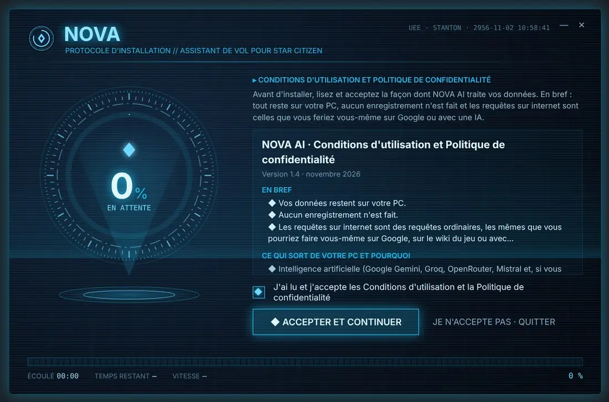
NORMAS_Y_PRIVACIDAD.fr.md.L'installateur vérifie Python, votre carte graphique, l'espace libre et la connexion. Sous ▸ DOSSIER D'INSTALLATION, vous voyez où elle sera installée et l'espace libre sur ce lecteur : CHOISIR UN DOSSIER… la déplace vers un autre dossier ou lecteur (par exemple D:\Jeux\NOVA AI). Choisissez aussi les options : accélération NVIDIA, voix hors ligne (Piper), raccourci sur le bureau et ouverture de Nova à la fin. Puis appuyez sur ◆ LANCER LA SÉQUENCE D'INSTALLATION.
Lors d'une mise à jour, NOVA AI reste dans le dossier où elle était ; pour la déplacer, désinstallez-la d'abord (vos données sont conservées).
Vous verrez chaque étape avec son état, le pourcentage, la vitesse de téléchargement et le temps restant. En cas d'échec, les boutons Réessayer et Voir le journal apparaissent.
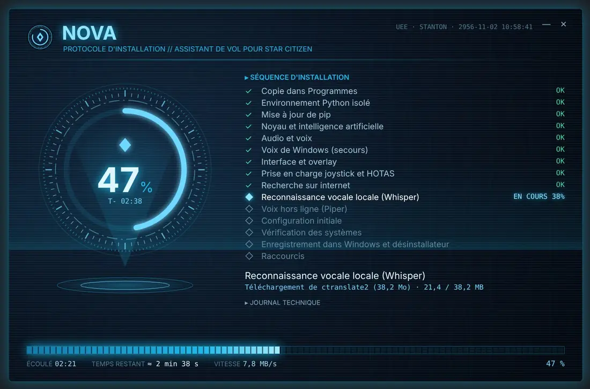
À la fin, vous aurez le raccourci NOVA AI sur le bureau et dans le menu Démarrer. À la première ouverture commence la configuration initiale (section 03).

C:\Program Files\NOVA AI ou le dossier que vous avez choisi.%LOCALAPPDATA%\NOVA AI\datosAu démarrage et à la fermeture, NOVA vérifie sur GitHub (github.com/0zzyt0/NOVA-AI) s'il existe une nouvelle version. Si oui, elle vous prévient à l'écran et à voix haute :
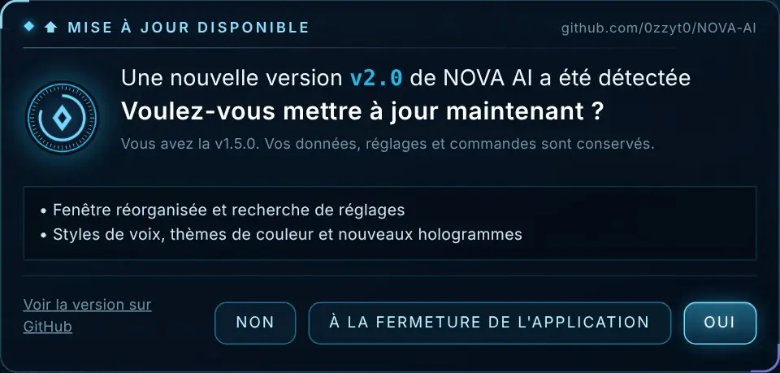
Vous pouvez aussi répondre à la voix : « oui », « non » ou « à la fermeture ». Si vous ne répondez pas et fermez NOVA, elle vous pose la question dans une fenêtre en partant. Vos données, réglages et commandes sont toujours conservés. Si vous aviez déjà accepté les conditions de cette version, l'installateur ne vous les redemande pas.
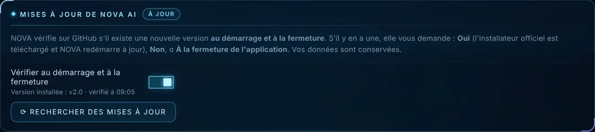
La première fois, Nova ouvre un assistant en 7 étapes. Vous pouvez répondre en parlant (bouton du micro) ou en écrivant. Chaque réponse est marquée d'un ✓ vert si elle vous a compris ; si une ✕ rouge apparaît, répétez.
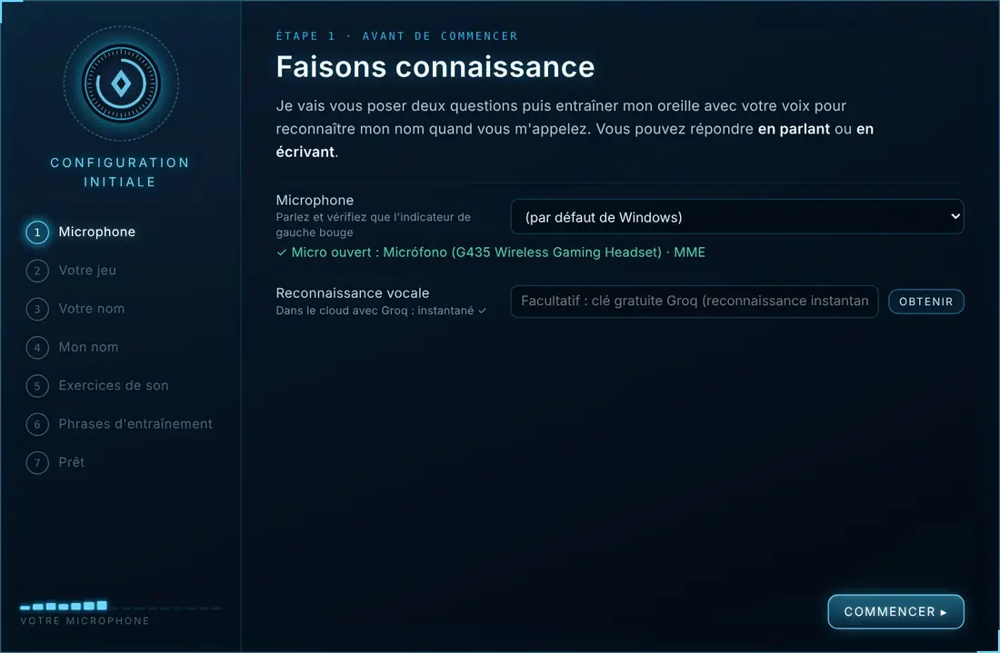
Choisissez votre micro et parlez : l'indicateur de gauche doit bouger. Collez ici votre clé Groq si vous en avez une (section 11) ; c'est facultatif.
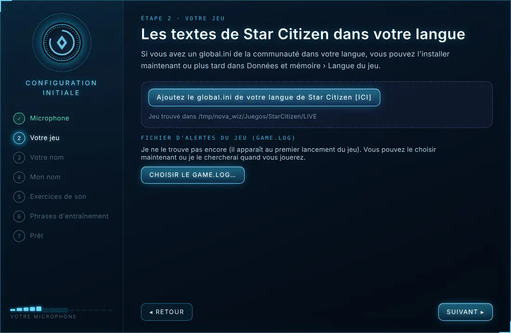
Nova cherche votre dossier LIVE de Star Citizen et sa langue. Si le jeu n'est pas dans votre langue, vous pourrez installer la traduction communautaire plus tard depuis Données et mémoire › Langue du jeu (section 09).
Elle ne trouve pas le jeu ? Cliquez sur Choisir le dossier et indiquez votre dossier StarCitizen.
En dessous, vous verrez le fichier d'alertes du jeu (Game.log) : où elle l'a trouvé ou, si vous jouez depuis un autre dossier, CHOISIR LE GAME.LOG…. S'il n'existe pas encore (il apparaît au premier lancement du jeu), Nova le cherchera d'elle-même quand vous jouerez.

En espagnol, avec Oui, télécharge-la et installe-la elle télécharge la traduction de 0zzyt0, la copie dans LIVE et règle votre user.cfg sur l'espagnol (les voix du jeu restent en anglais). Avant cela, elle en garde une copie : user.cfg.nova_copia.
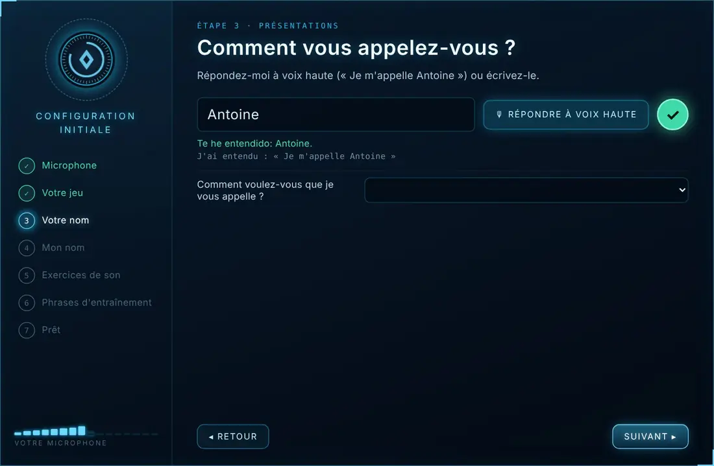
Dites « Je m'appelle Antoine » ou écrivez-le, et choisissez comment elle doit s'adresser à vous : monsieur, capitaine, par votre nom…
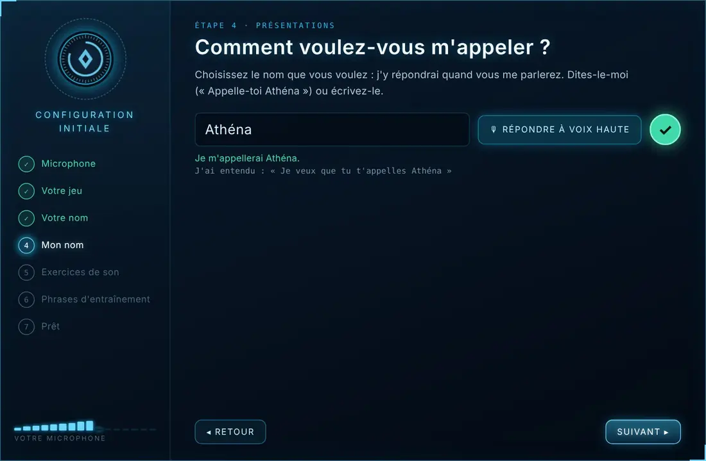
Le nom que vous voulez : Nova, Athéna, Jarvis… Elle vous prévient s'il est trop court ou trop courant, car elle se réveillerait par erreur. Deux ou trois syllabes, c'est l'idéal.
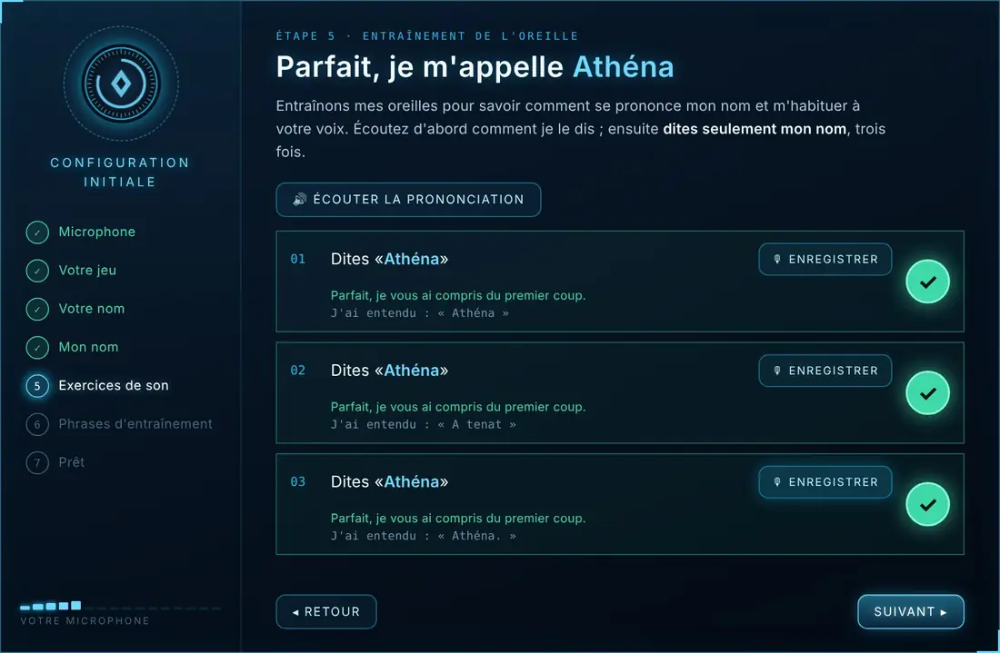
Cliquez sur Écouter la prononciation puis dites seulement son nom trois fois. Si la reconnaissance vocale l'écrit autrement (« A tenat » au lieu d'« Athéna »), Nova l'apprend.
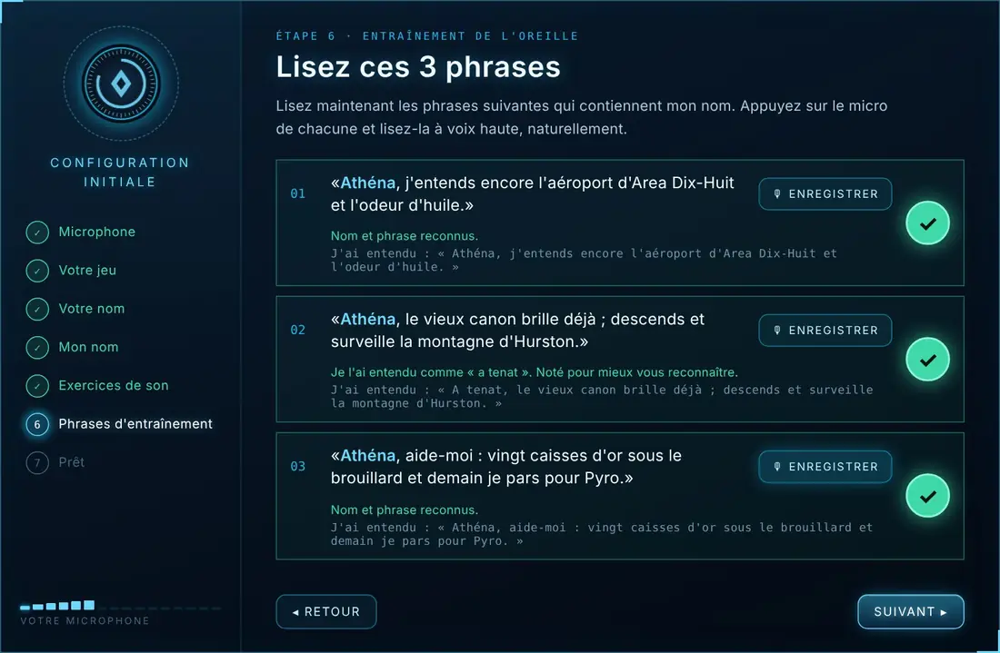
Lisez à voix haute 3 phrases de Star Citizen qui commencent par son nom. Elles sont tirées au hasard : une avec beaucoup de voyelles à la suite (pour saisir votre diction), une avec des consonnes difficiles et une qui mélange les deux. C'est ainsi qu'elle ajuste la sensibilité à votre voix et au bruit de votre pièce.
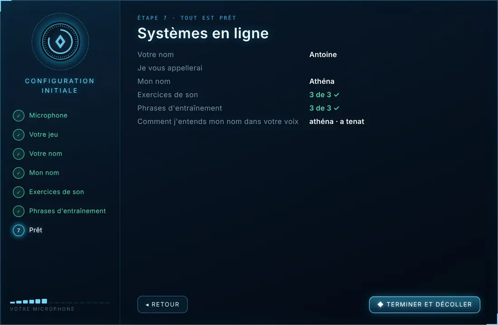
Un résumé de tout. Cliquez sur ◆ Terminer et décoller.
Nova s'ouvre dans sa propre fenêtre. Si vous la fermez, Nova reste dans la zone de notification de Windows, près de l'horloge (section 10). Quand vous la rouvrez, elle retrouve la conversation, la section et la taille de la fenêtre.
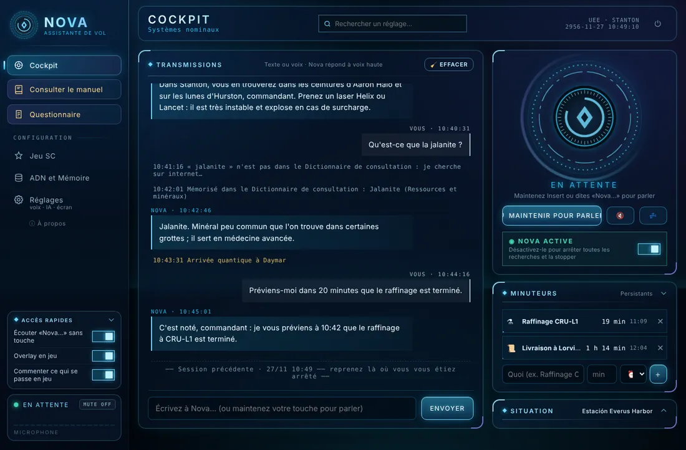
12 34 56 78 910 11Tout tient sans barres de défilement : si la fenêtre est basse, l'hologramme rétrécit et Situation, Minuteurs et Accès rapides se replient d'eux-mêmes (repliés, ils affichent un résumé comme « 2 actifs »). Cliquez sur leur en-tête pour les ouvrir ou les replier ; Nova s'en souvient.
| Section | Ce que vous y trouverez |
|---|---|
| 📖 Consulter le manuel | Sous Cockpit : ouvre ce manuel dans votre navigateur (dans votre langue). |
| Jeu SC | Commandes vocales, touches et joystick, alertes du jeu (Game.log et profils de vaisseau), chat du jeu et langue du jeu. |
| Nova | Identité, voix (styles, prononciation et sortie audio), écoute (microphone, comment lui parler et mode veille) et intelligence (avec l'économie de tokens). |
| Écran | Le logo d'état et les hologrammes par-dessus le jeu, et l'apparence : niveau d'effets et thème de couleur. |
| Informations | Sources et état des serveurs, Dictionnaire, ce qu'elle sait de vous, journal de bord et statistiques, et Discord. |
| Réglages | Langue de NOVA AI, fenêtre et zone de notification, mises à jour, À propos, sauvegardes, fichiers et repartir de zéro. |
| 🔎 Rechercher un réglage | Dans l'en-tête (ou Ctrl+F) : tapez une partie du nom d'une option et elle vous y emmène directement. |
Le Cockpit est le registre de tout ce que vous dites à Nova et de ses réponses. Sous chaque réponse, vous verrez quel moteur d'IA l'a produite (par exemple via gemini-flash-lite-latest).
Maintenez Insert pendant que vous parlez, puis relâchez. Vous pouvez la remplacer par n'importe quelle touche, bouton de souris ou de HOTAS.
« Nova, sors le train d'atterrissage ». Si vous dites seulement « Nova », elle répond « Oui, monsieur ? » et attend l'ordre.
Utilisez la zone de texte du Cockpit et cliquez sur ENVOYER. Idéal quand vous êtes en appel vocal sur Discord.
| Type | Phrases |
|---|---|
| Manœuvres | « sors le train d'atterrissage » · « demande l'atterrissage » · « mode VTOL » · « saut quantique » |
| Systèmes | « active les boucliers » · « active l'énergie » · « ouvre les portes » · « lumières » |
| Infos du jeu | « où miner du quantainium ? » · « à combien se vend la laranite ? » · « plans d'un pistolet à Pyro » |
| Votre session | « où suis-je ? » · « où ai-je laissé mon personnage ? » · « qui est monté à bord ? » |
| Mémoire | « souviens-toi que mon vaisseau préféré est le Cutlass » · « oublie le Cutlass » |
| Joueurs et planètes | « cherche-moi un joueur » · « parle-moi de Daymar » · « qu'est-ce que le Security Post Kareah ? » |
| Minuteurs | « rappelle-moi dans 3 heures et 20 minutes, la raffinerie d'ARC-L1 » · « quels minuteurs j'ai ? » |
| Commerce et serveurs | « quelle route rapporte le plus avec 100 000 aUEC ? » · « comment vont les serveurs ? » |
| Combat et statistiques | « verrouille la cible » (va dans le journal) · « combien d'éliminations ce mois-ci ? » |
| Contrôle de Nova | « Nova, arrête tout » ou « désactive-toi » (l'arrête) · « Nova, active-toi » · « silence » ou « tais-toi » (elle arrête de parler) |
| À propos de Nova | « Qui es-tu ? » · « Présente-toi » · « À quoi tu sers ? » · « Ouvre le manuel » |
| Chat du jeu | « Nova, envoie un message au chat : quelqu'un a besoin d'une escorte ? » (elle le traduit si besoin et l'écrit) |
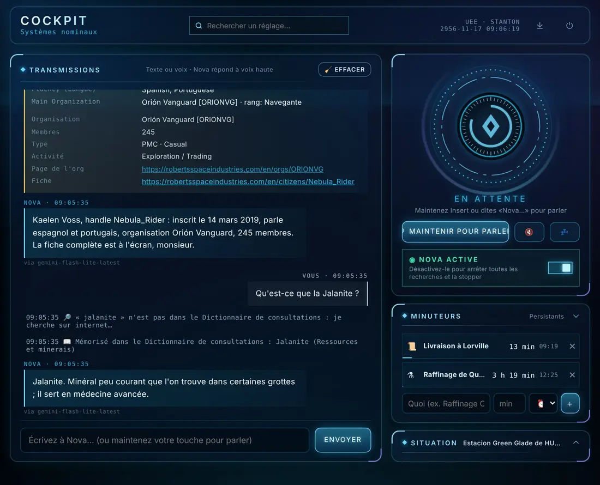
90, 1:30 ou 2h30) puis cliquez sur ＋.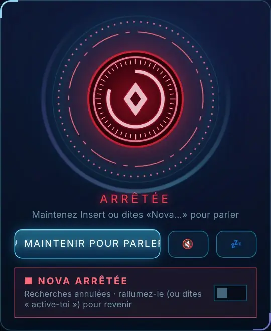
Où vous êtes, vos contrats actifs, l'overlay et les serveurs RSI : au démarrage, NOVA consulte status.robertsspaceindustries.com et vous prévient des pannes ou maintenances.
Nebula_Rider) et appuyez sur Entrée. Si vous dites tout d'un coup (« cherche le joueur Nebula_Rider »), l'étape 2 est sautée.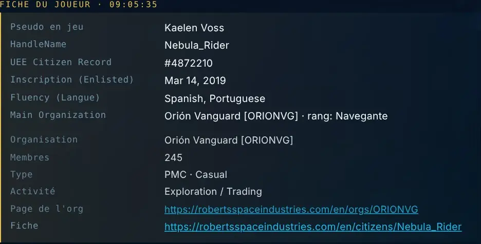
Nova lit sa fiche publique sur robertsspaceindustries.com : pseudo en jeu, handle, dossier UEE, date d'inscription, langues et organisation principale, puis la page de cette organisation (membres, type, activité). Sa fiche de police apparaît aussi en hologramme par-dessus le jeu (section 08).
Si une donnée est masquée (RSI l'affiche comme [REDACTED]), Nova vous dit que cette information est masquée.
Chaque recherche est enregistrée dans Informations › Journal de bord et statistiques, dans le fichier Busquedas_de_jugadores.log : date · heure · joueur · organisation.
Avec un webhook dans Informations › Discord, Nova demande « Je l'envoie sur Discord ? » et, si vous dites ou écrivez « oui » dans les 30 secondes, elle la publie dans ce salon (les cibles de prime en rouge). Le Cockpit vous indique si elle est arrivée.
Quand vous acceptez une mission de chasseur de primes ou PvP (ou quand apparaît « Nouvel objectif : Neutraliser XX »), Nova demande « Je cherche sa fiche RSI ? » et ne la cherche que si vous dites « oui ». S'il a une fiche, c'est un joueur : une alerte retentit et sa fiche apparaît en rouge avec le tampon « CIBLE DE PRIME ». Sinon, elle vous dit que c'est un pilote PNJ. Les deux cas vont dans le registre des recherches de joueurs.
Tout ce qui concerne Star Citizen, en cinq onglets : Commandes vocales, Touches et joystick, Alertes du jeu, Chat du jeu et Langue du jeu.
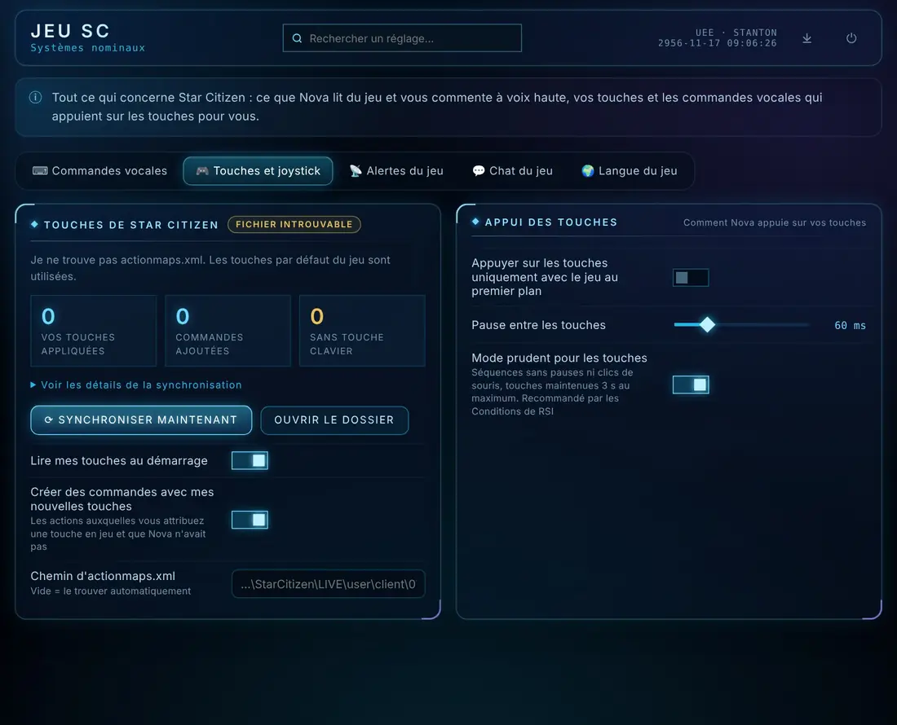
actionmaps.xml au démarrage et utilise vos propres touches.La liste des commandes regroupées par catégorie (décollage et atterrissage, énergie et systèmes, armes, minage…). Chacune affiche ses phrases et ses touches. Vous pouvez les chercher par nom, phrase ou touche.
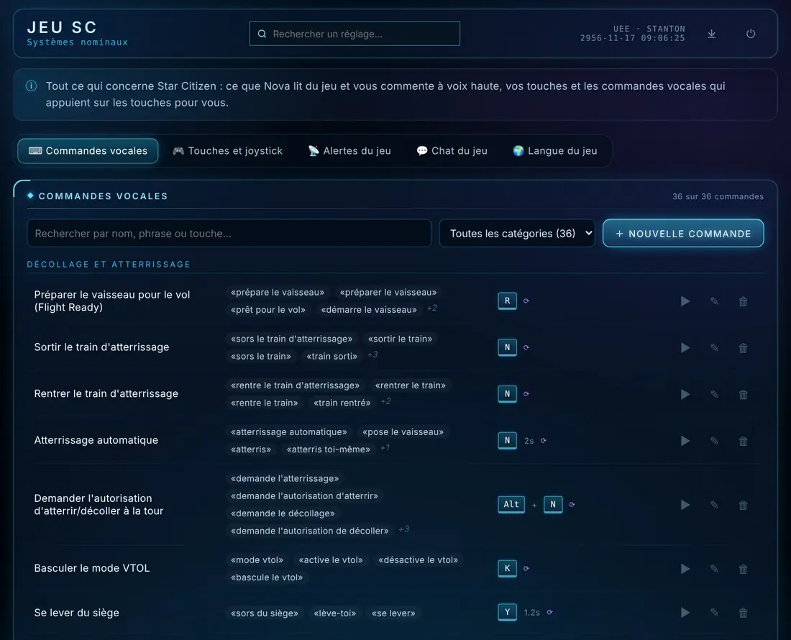
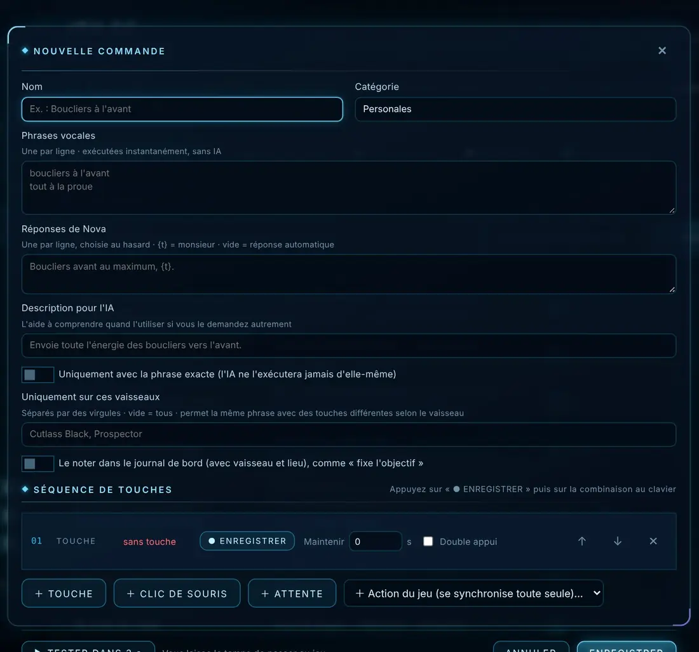
Uniquement sur ces vaisseaux limite une commande à certains vaisseaux (et permet la même phrase avec des touches différentes dans chacun). Le noter dans le journal l'enregistre avec le vaisseau et le lieu, comme « verrouille la cible ».
comandos_personales.json) : les mises à jour ne les effacent pas. ↺ restaure une commande d'usine.Chaque vaisseau peut avoir ses propres alertes vocales : par exemple, pas d'alertes de groupe ni d'argent dans le MOLE. Nova sait dans quel vaisseau vous êtes grâce au Game.log. Écrivez ou choisissez le vaisseau, cliquez sur ＋ CRÉER UN PROFIL et cochez ce que vous voulez y entendre ; ce qui diffère des alertes générales est affiché en jaune. Le profil du vaisseau où vous êtes est marqué EN SERVICE.
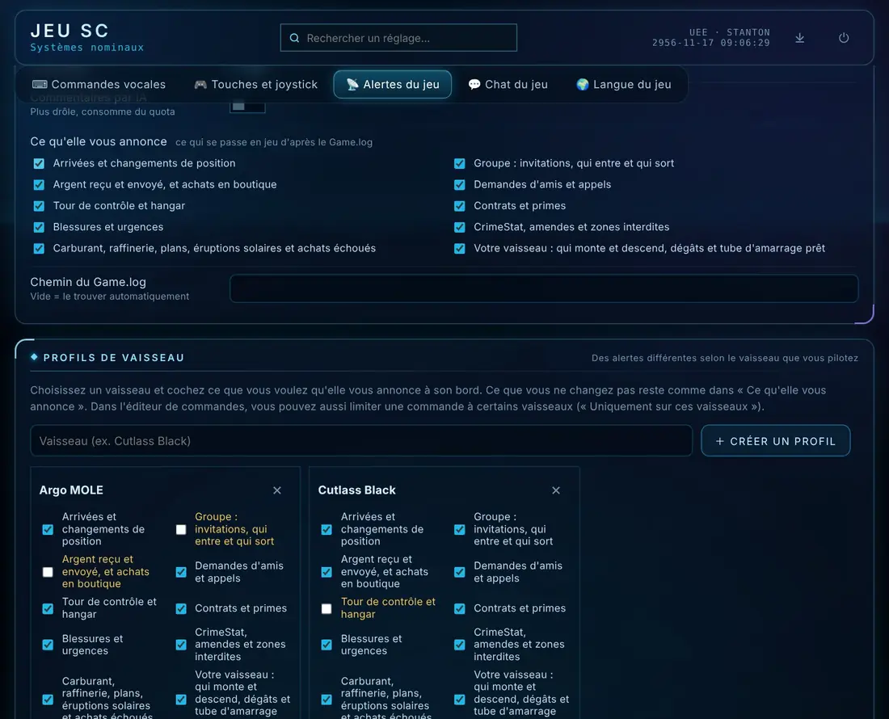
Le Game.log n'enregistre pas quand vous verrouillez une cible (« marquer » un ennemi). Si vous le lui demandez à la voix (« Nova, verrouille la cible », « marque la cible »), Nova appuie sur la touche et le note dans le journal (étiquette CIBLE) avec le vaisseau et le lieu.
« Nova, quelle route rapporte le plus avec 100 000 aUEC ? » : avec les prix d'UEX, elle calcule combien de SCU acheter pour la soute du vaisseau où vous êtes (ou celui que vous nommez), le stock à l'origine, la demande à destination et votre argent, et trie par bénéfice réel. Si elle ne connaît pas votre vaisseau, elle utilise la Soute par défaut d'Informations › Sources.
Écrivez dans le chat de Star Citizen sans lâcher les commandes, et en anglais même si vous lui parlez dans une autre langue :
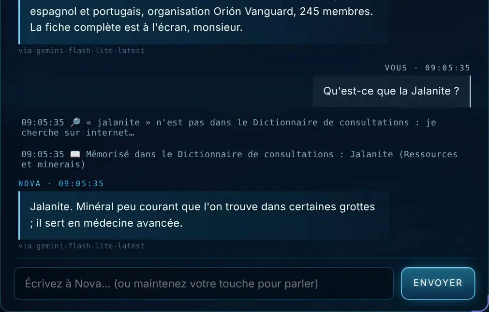
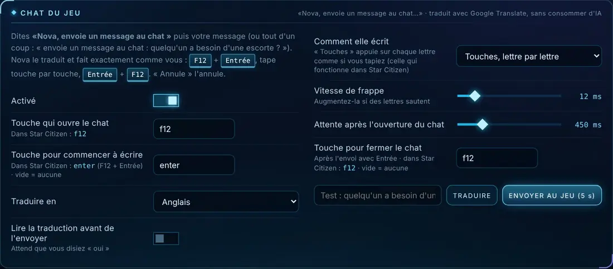
Écrivez un message et cliquez sur TRADUIRE pour voir la traduction, ou sur ENVOYER AU JEU (5 s) et revenez dans Star Citizen : il s'écrit au bout de 5 secondes. « Annule » annule un message en attente. Chaque message va dans le journal (étiquette CHAT).
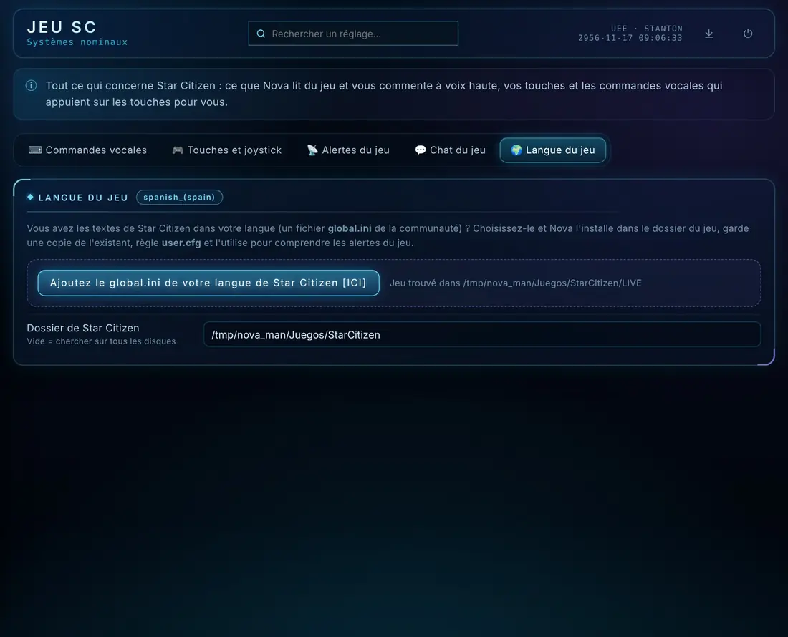
global.ini communautaire que vous choisissez. Elle remplace les fichiers de LIVE après en avoir fait une sauvegarde.Nova vous demande « Vérifier et réinstaller ? » :
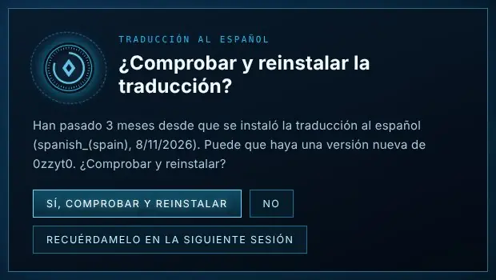
Nova regroupe tout sur elle, en quatre onglets : Identité, Voix, Écoute et Intelligence. Commençons par sa voix. Toutes les voix sont gratuites : celles d'Edge sont les plus naturelles et celles de Piper fonctionnent sans internet.
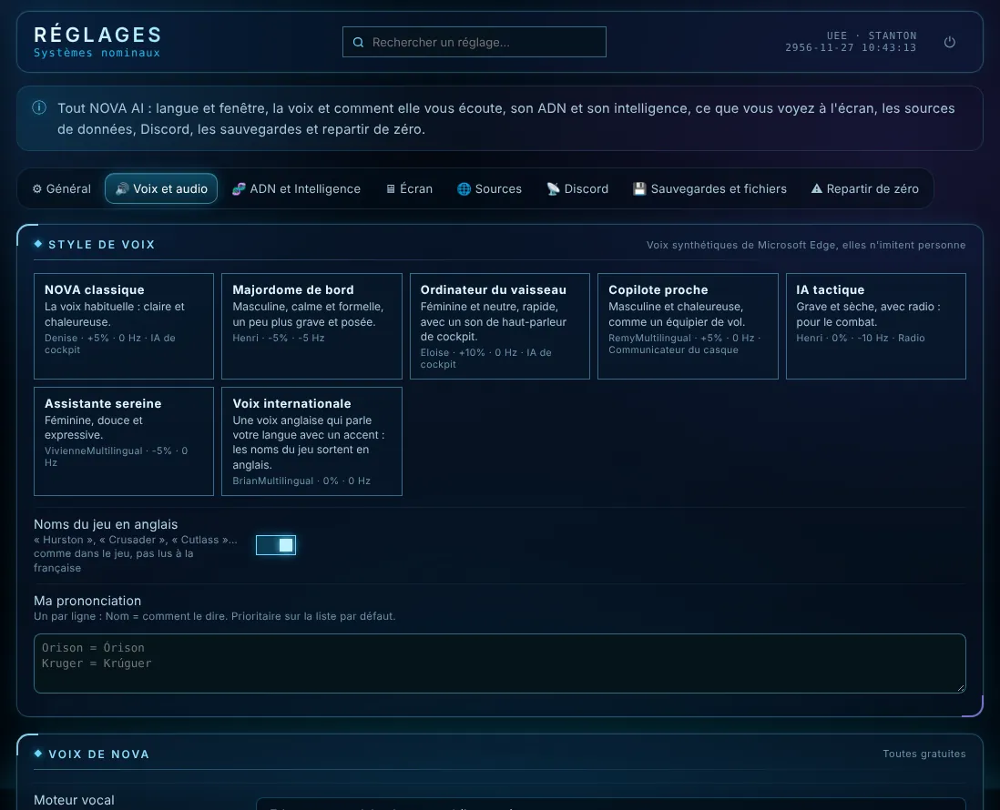
| Moteur | Ce qu'il donne | Internet |
|---|---|---|
| Edge | Voix neuronales de Microsoft, très naturelles. La liste affiche celles de votre langue et, à la fin, les Multilingual d'autres langues, qui parlent aussi la vôtre (avec leur accent). | Oui |
| Piper | Bonne qualité et hors ligne. La voix se télécharge toute seule la première fois. | Non |
| Windows | La voix du système, en dernier recours. | Non |
En haut de Nova › Voix, vous avez sept styles : des combinaisons déjà réglées de voix, vitesse, tonalité et effet de cockpit, dans l'esprit des assistants de bord des films. Cliquez sur l'un d'eux et Nova l'essaie aussitôt ; si vous modifiez ensuite quelque chose à la main, le style se décoche et reste à votre goût.
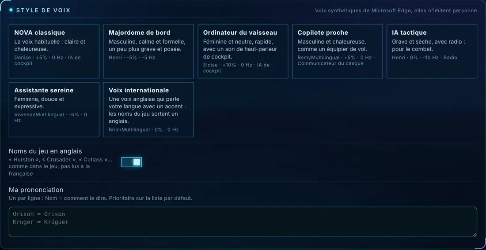
| Style | Comment elle sonne |
|---|---|
| NOVA classique | La voix habituelle : claire et chaleureuse, avec effet de cockpit. |
| Majordome de bord | Masculine, calme et formelle, un peu plus grave et posée. |
| Ordinateur du vaisseau | Féminine et neutre, rapide, avec un son de haut-parleur de cockpit. |
| Copilote proche | Masculine et chaleureuse, par le communicateur du casque. |
| IA tactique | Grave et sèche, par radio avec grésillement : pour le combat. |
| Assistante sereine | Féminine, douce et expressive. |
| Voix internationale | Une voix anglaise qui parle votre langue avec un accent : les noms du jeu sortent en anglais. |
Edge lit Crusader, Hurston ou Cutlass avec les règles de votre langue. Avec Noms du jeu en anglais (activé par défaut), Nova les prononce comme dans le jeu : planètes, lunes, stations, fabricants et vaisseaux. Dans Ma prononciation, vous ajoutez ou corrigez les vôtres, un par ligne : Orison = Orissonne. Les vôtres priment sur la liste par défaut, et ▶ Tester la voix dit une phrase avec des noms du jeu pour que vous l'entendiez.
À la fin de l'onglet Voix : si vous avez plusieurs sorties (haut-parleurs, casque, interface audio USB…), choisissez où vous voulez entendre Nova. Par défaut utilise celle de Windows. ▶ Tester le son pour vérifier. Avec un casque, Nova ne s'entend pas elle-même dans le micro.
Comment vous communiquez avec Nova : l'onglet Écoute réunit le microphone, comment lui parler et le mode veille (chapitre 10).
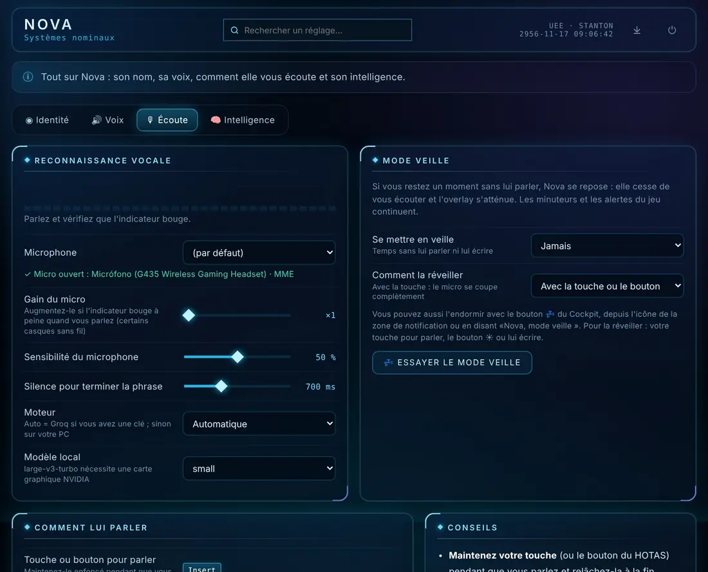
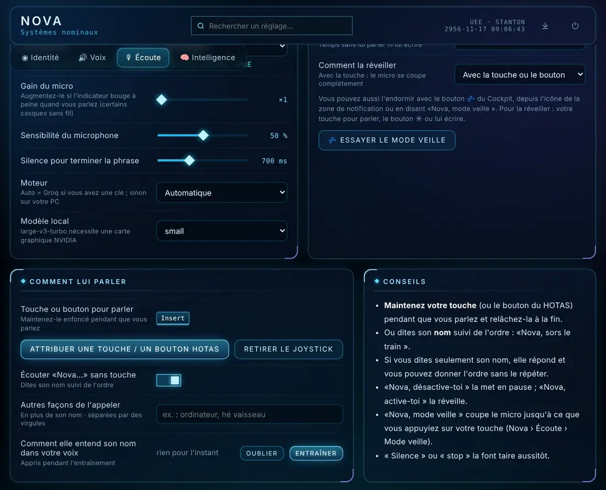
small sans NVIDIA ; large-v3-turbo avec NVIDIA.Le cerveau de Nova : son nom et le vôtre (onglet Identité), et dans Intelligence les clés des moteurs d'IA, l'ordre dans lequel elle les utilise, sa personnalité et l'économie de tokens.
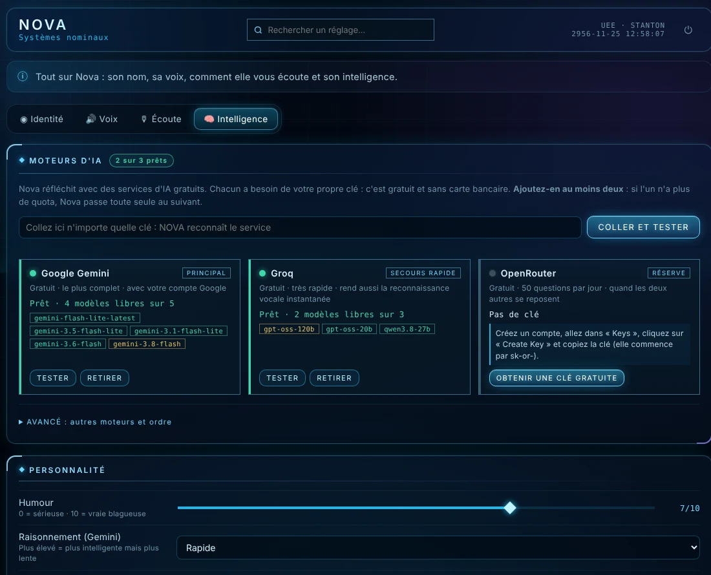
Nom de l'IA, votre nom et comment elle vous appelle. Si vous changez son nom, refaites l'entraînement avec ◆ Refaire la configuration pour qu'elle le reconnaisse dans votre voix.
Collez ici vos clés (section 11). Si votre installateur inclut des clés d'essai, elles y seront déjà. Un point vert signifie qu'il y a une clé. Pour utiliser la vôtre, cliquez sur le champ et collez-la par-dessus (section 11).
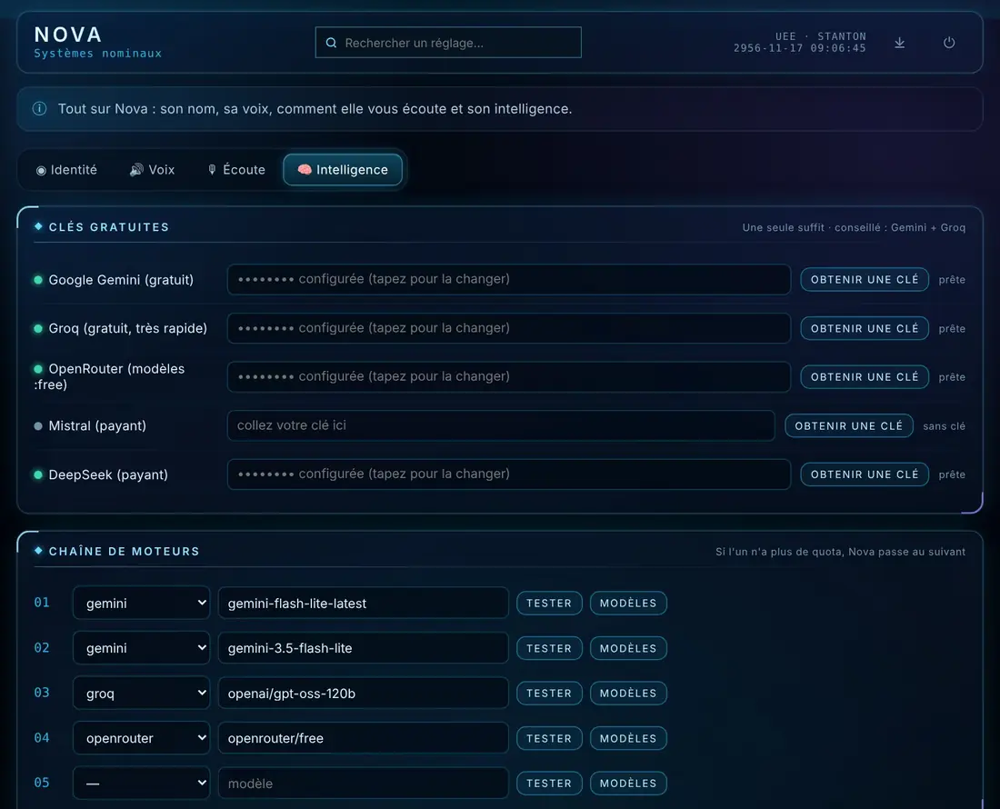
Nova essaie les moteurs dans l'ordre : si l'un n'a plus de quota ou échoue, elle passe au suivant sans que vous le remarquiez. L'ordre d'usine est :
| # | Fournisseur | Modèle |
|---|---|---|
| 01 | Gemini | gemini-flash-lite-latest · rapide, beaucoup de requêtes gratuites |
| 02 | Gemini | gemini-3.5-flash-lite |
| 03 | Groq | openai/gpt-oss-120b · secours ultra-rapide |
| 04 | OpenRouter | openrouter/free · modèles gratuits variés |
Mistral est payant depuis août 2026, la 2.0 le retire donc de la chaîne par défaut. Si vous avez votre propre clé payante, ajoutez-la et Nova l'intègre (chapitre 11).
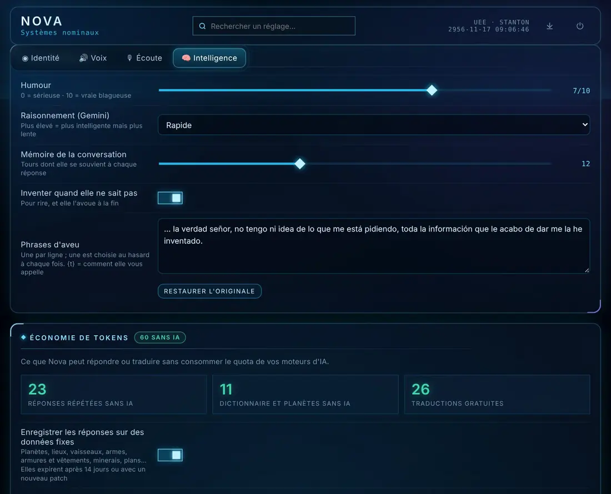
| Réglage | À quoi il sert |
|---|---|
| Humour | De 0 (sérieuse) à 10 (blagueuse totale). |
| Raisonnement (Gemini) | Plus haut = plus intelligente mais plus lente. « Rapide » est idéal en vol. |
| Mémoire de conversation | Combien de tours précédents elle se rappelle à chaque réponse. |
| Inventer quand elle ne sait pas | Activé : elle invente la réponse avec esprit et l'avoue à la fin. Désactivé : elle vous dit avec humour qu'elle ne sait pas. |
| Phrases d'aveu | Une par ligne ; elle en choisit une au hasard. {t} est remplacé par la façon dont elle vous appelle. Restaurer l'originale revient à celle d'usine. |
À la fin de Nova › Intelligence. Les clés gratuites ont une limite quotidienne. Nova répond à tout ce qu'elle peut sans l'IA :
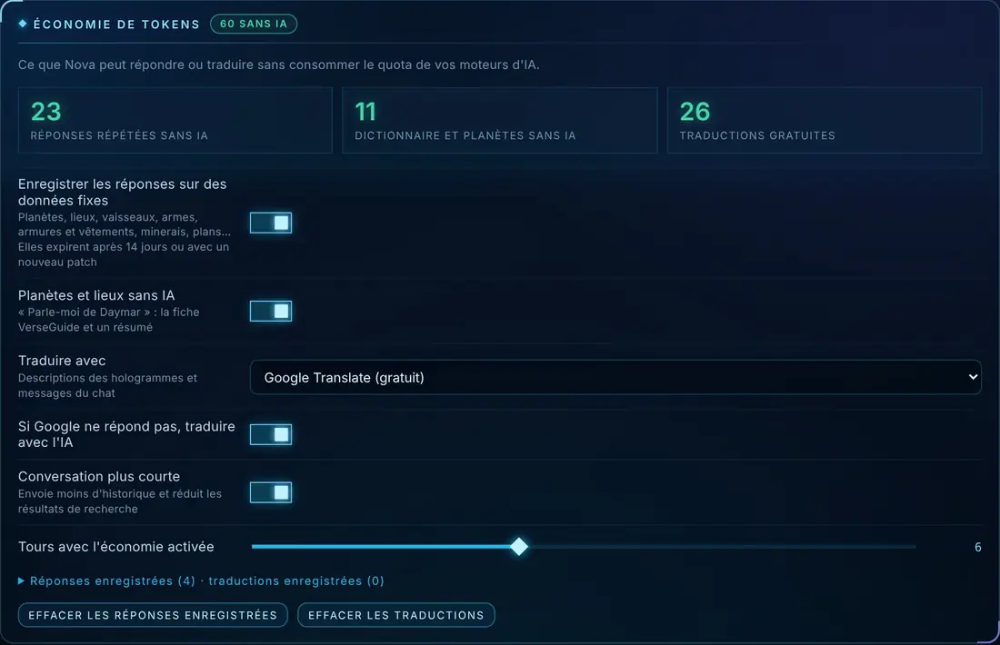
Si l'IA répond en utilisant uniquement des données qui ne changent pas (vaisseaux, armes, armures et vêtements, composants, minéraux, plans, planètes…), la réponse est enregistrée. La prochaine fois que vous demandez la même chose (« qu'est-ce que le Cutlass Black ? » ou « parle-moi du Cutlass Black »), Nova la répète sans rien dépenser. Elles expirent au bout de 14 jours ou quand le patch change. Les prix, les routes, votre session et les questions qui dépendent de la conversation ne sont jamais enregistrés.
« Parle-moi de Daymar », « qu'est-ce que le Security Post Kareah ? » : Nova récupère la fiche VerseGuide, l'affiche en hologramme et vous en fait un résumé vocal.
Les descriptions des hologrammes et les messages du chat sont traduits avec Google Traduction. L'IA n'est utilisée que si Google ne répond pas (vous pouvez le désactiver). Les traductions sont enregistrées et ne sont jamais redemandées.
Envoie moins d'historique à l'IA (6 tours par défaut) et raccourcit les longues réponses et les résultats de recherche. Compteurs, liste des réponses enregistrées et boutons pour les effacer.
Tout ce que NOVA dessine par-dessus le jeu et l'apparence de la fenêtre, en trois onglets : Overlay (le logo d'état), Hologrammes et Apparence (niveau d'effets et thème de couleur). L'aperçu utilise une scène du jeu en fond pour que vous voyiez le rendu.
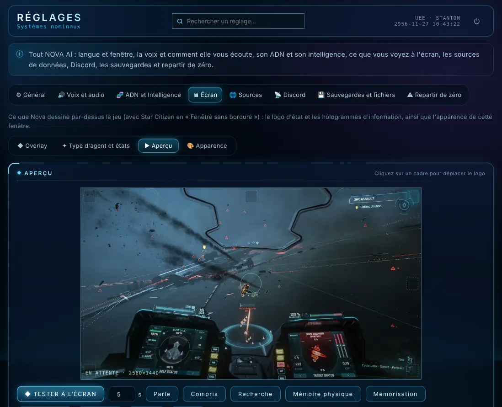
Des fiches holographiques par-dessus le jeu. Elles apparaissent comme une projection (une ligne de lumière qui s'ouvre avec un son d'allumage), ont des lignes de balayage tant qu'elles sont à l'écran et se replient avec un son d'extinction.
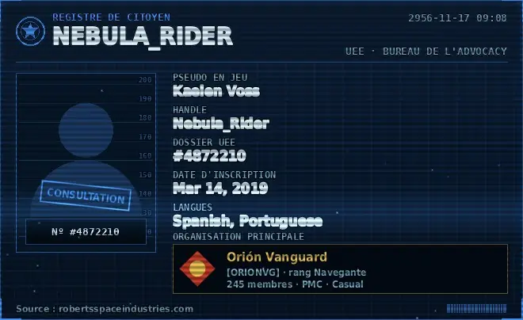
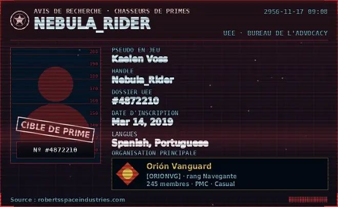
Quand vous recherchez un joueur : photo de profil, pseudo en jeu, handle, numéro de dossier, date d'inscription, langues et l'organisation avec son logo. Ce que le joueur masque apparaît comme REDACTED.
Si la cible d'une prime ou d'une mission PvP est un joueur et que vous dites « oui » pour la rechercher, une alerte à deux tons retentit avant l'ouverture de la fiche, en rouge et avec le tampon CIBLE DE PRIME. Si c'est un pilote PNJ, elle vous le dit simplement.
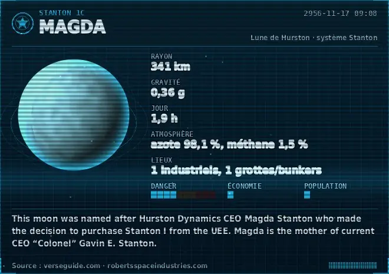
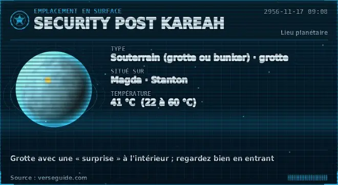
« Nova, parle-moi de Daymar ». Données de verseguide.com : type, rayon, gravité, durée du jour, atmosphère, danger, économie, population, ses lieux et une description dans votre langue.
Grottes, avant-postes, bases, bunkers : « qu'est-ce que le Security Post Kareah ? » → type, où il se trouve, température et description dans votre langue.
À l'arrivée : quand le Game.log indique que vous approchez d'une planète ou d'une lune, ou que vous arrivez dans l'un de ses lieux, la fiche apparaît d'elle-même (au plus une fois par demi-heure pour le même lieu).
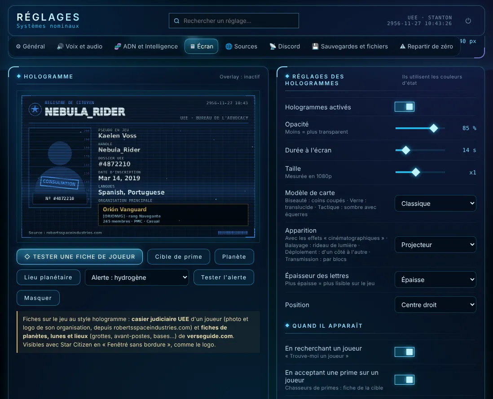
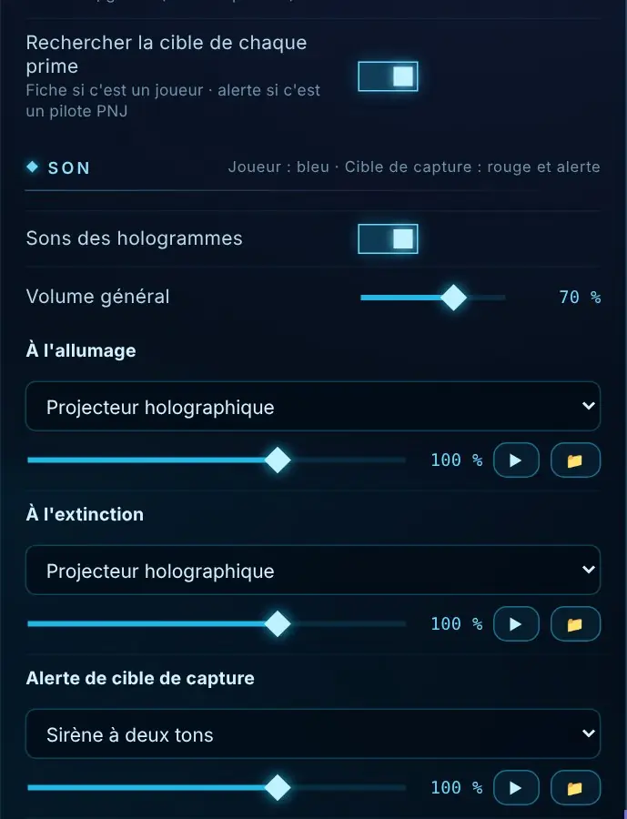
Chaque hologramme émet un son quand il s'allume et quand il s'éteint, et les cibles de prime ont une alerte avant l'ouverture. Pour chacun des trois moments, vous choisissez :
| Moment | Sons de la liste |
|---|---|
| À l'allumage | Projecteur holographique · Impulsion numérique · Scanner · Carillon · Démarrage moteur |
| À l'extinction | Projecteur holographique · Impulsion numérique · Déconnexion · Carillon · Arrêt moteur |
| Alerte de prime | Sirène deux tons · Klaxon · Bips rapides · Alarme de proximité · Cloche de combat |
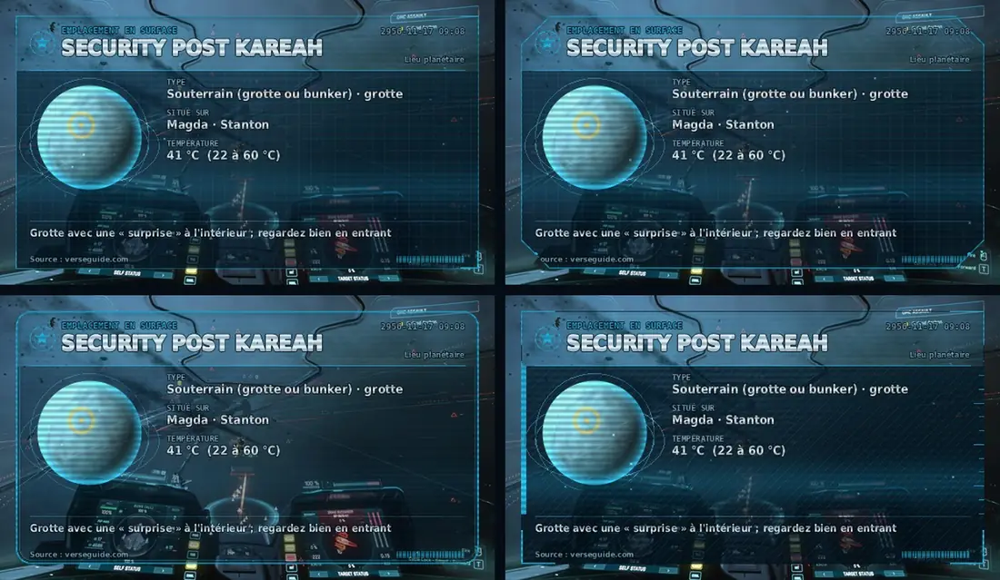
Classique (grille et coins de HUD), Biseauté (coins coupés en diagonale), Verre (translucide et arrondi) ou Tactique (sombre, avec équerres et une barre latérale).
Avec les effets cinématographiques : Projecteur (s'ouvre depuis le centre), Balayage (un rideau de lumière de haut en bas), Déploiement (d'un côté à l'autre) ou Transmission (se matérialise par blocs). En partant, il fait l'inverse.
Normale, Épaisse (par défaut) ou Très épaisse. Les petits textes s'épaississent juste assez pour ne pas baver.
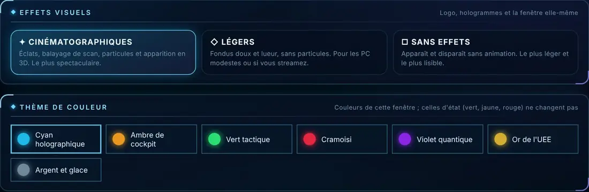
Étincelles, balayage de scan, aberration chromatique à la projection, particules de lumière et un anneau qui tourne autour du logo.
Fondus et halos doux, sans particules ni scintillement. Pour les PC modestes ou si vous streamez.
Apparaît et disparaît instantanément, sans animations. Le plus léger et le plus lisible.
Thème de couleur : Cyan holographique (l'habituel), Ambre de cockpit, Vert tactique, Cramoisi, Violet quantique, Or de l'UEE ou Argent et glace. Il change aussitôt les couleurs de cette fenêtre ; les couleurs d'état (vert, jaune, rouge, violet) ne changent pas, pour garder le même sens.
D'où Nova tire ses informations et ce dont elle se souvient, en cinq onglets : Sources, Dictionnaire, Ce qu'elle sait de vous, Journal de bord et statistiques et Discord. Au démarrage, elle vérifie s'il y a de nouvelles données pour votre patch avant d'allumer quoi que ce soit.
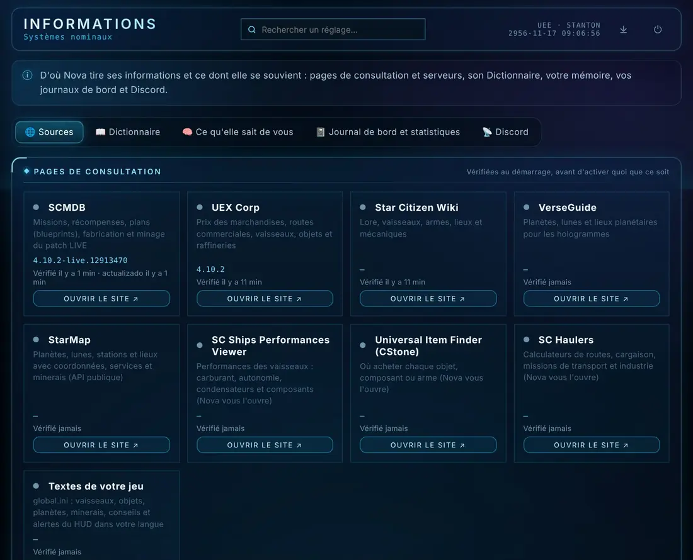
| Source | Ce qu'elle apporte |
|---|---|
| SCMDB | Missions, récompenses, plans, fabrication et minage du patch LIVE. |
| UEX Corp | Prix des marchandises, routes commerciales, vaisseaux, objets et raffineries. |
| Star Citizen Wiki | Lore, vaisseaux, armes, lieux et mécaniques. |
| Les textes de votre jeu | Le global.ini : noms officiels et alertes du HUD dans votre langue. |
| RSI | Fiches publiques de joueurs et d'organisations, et état des serveurs. |
| VerseGuide | Planètes, lunes et lieux planétaires pour les hologrammes. |
| StarMap | Planètes, stations et lieux : gravité, température, coordonnées, services (clinique, plateformes) et minéraux. |
Pages que Nova ouvre dans votre navigateur quand elles sont la meilleure source (dites-lui : « ouvre le chercheur d'objets ») : Universal Item Finder (finder.cstone.space, où acheter chaque objet), SC Ships Performances Viewer (spviewer.eu, performances des vaisseaux) et SC Haulers (schaulers.com, calculateurs de cargaison et de routes).
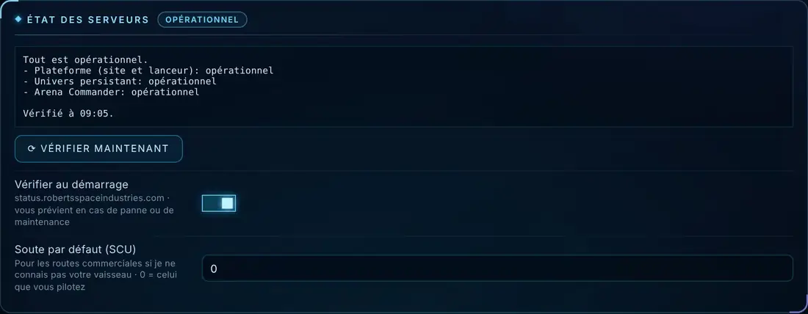
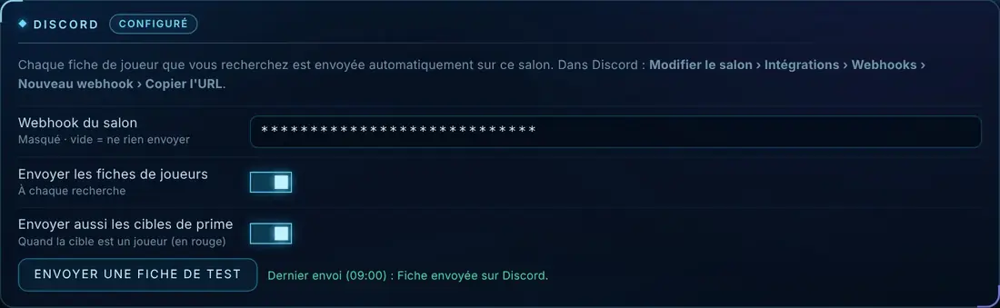
Au démarrage, NOVA consulte status.robertsspaceindustries.com et vous prévient des pannes ou maintenances. Vérifier maintenant regarde de nouveau. Demandez-lui « comment vont les serveurs ? ».
Collez le webhook d'un salon (Discord : Modifier le salon › Intégrations › Webhooks) : après chaque fiche, Nova demande s'il faut l'envoyer ; avec « oui », elle est publiée avec photo et logo, cibles de prime comprises (en rouge). Envoyer une fiche de test en publie une d'exemple et vous voyez en dessous le résultat de la dernière publication.
Les SCU que Nova utilise pour calculer les routes commerciales quand elle ne sait pas dans quel vaisseau vous êtes.
Dans Réglages › Général, vous activez ou désactivez la vérification de nouvelles versions au démarrage et à la fermeture, et vous pouvez en chercher une à la main avec Rechercher des mises à jour maintenant. Fonctionnement de la mise à jour : section 02.
Ce que Nova garde de vous : Informations › Ce qu'elle sait de vous et Journal de bord et statistiques. Vos fichiers, les sauvegardes et repartir de zéro sont dans Réglages (chapitre 10).
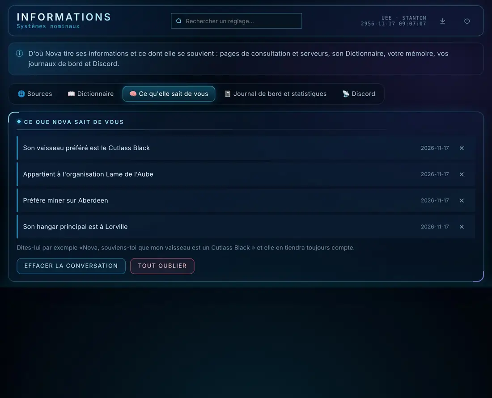
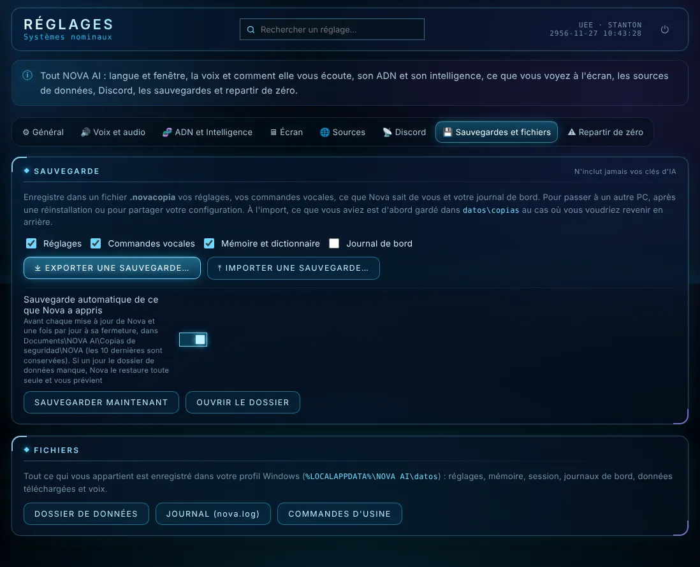
Dans Réglages › Sauvegardes et fichiers. Tout ce qui est à vous se trouve dans %LOCALAPPDATA%\NOVA AI\datos. Trois boutons :
Chaque session de jeu est écrite dans un fichier .log que vous pouvez ouvrir avec le Bloc-notes (les 60 dernières sont conservées). Il vient du Game.log lui-même : si vous ouvrez Nova avec la session déjà commencée ou après avoir joué, elle reconstruit le journal complet.
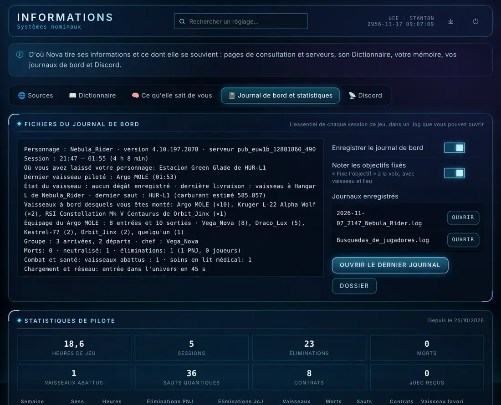
| Étiquette | Ce qu'elle enregistre |
|---|---|
| COMBAT | Éliminations de PNJ et de joueurs (arme et cause) et vaisseaux que vous détruisez ou neutralisez. |
| MORT · MORTS | Vos morts (qui, avec quoi, cause), celles des autres et le point de réapparition. |
| SANTÉ | Blessures, neutralisations avec leur cause et soins au lit médical. |
| CHARGEMENT · RÉSEAU | Connexion, apparition, temps de chargement, chargements bloqués et coupures réseau. |
| VAISSEAU · GROUPE · TOUR… | Montée et descente des vaisseaux, qui monte dans le vôtre, groupe, hangar, contrats, argent, achats, plans. |
Chaque joueur que vous recherchez (ou que Nova recherche pour une prime) est écrit dans Busquedas_de_jugadores.log, dans le même dossier de journaux. C'est un fichier unique qui n'est pas effacé avec les anciennes sessions :
Si une session est en cours, la recherche va aussi dans le journal de cette session (étiquette JOUEUR ou CIBLE).
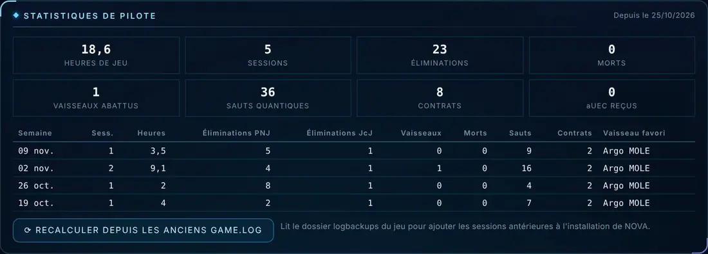
Heures, éliminations, morts, sauts, contrats et argent dépensé en boutique sur toutes vos sessions, semaine par semaine. Recalculer lit les anciens Game.log du jeu (logbackups) pour ajouter ce que vous avez joué avant d'installer Nova. Demandez-lui « combien d'éliminations ce mois-ci ? ».
La mémoire physique de Nova : Diccionario_de_consultas.txt, dans votre dossier de données. Trié par groupes (planètes et lunes, stations, villes, lieux, vaisseaux et véhicules, armures, armes personnelles et de vaisseau, composants, ressources et minéraux, marchandises, vêtements, peintures, fabricants…) et dans chacun par ordre alphabétique. Les variantes sont regroupées sous leur famille, car elles ne sont pas identiques : l'Attrition-1 est de taille 1 et l'Attrition-5 de taille 5.
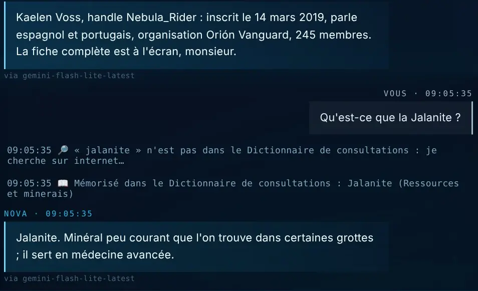
S'il n'existe pas (première installation), Nova le crée, vous le dit et le remplit avec les textes officiels du jeu dans votre langue (le global.ini du jeu) : environ 7 000 entrées, sans rien dépenser. Chaque entrée porte le patch, la date et son origine (jeu, internet ou IA).
Il est conservé d'une version à l'autre, lors des mises à jour et quand vous « repartez de zéro », et le désinstallateur ne l'efface pas. Avec un nouveau patch ou une nouvelle traduction, ce qui vient du jeu se met à jour tout seul. « Nova, mets à jour la fiche de X » le recherche de nouveau.
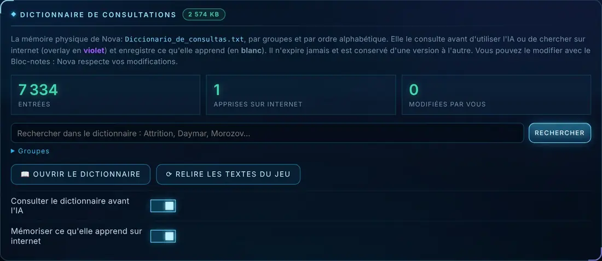
* Nom : définition). Nova utilise votre texte et ne l'écrase plus jamais. Rechercher vous montre ce qu'elle sait sur un sujet sans le lui demander.Dans Réglages, vous trouvez la langue (le seul endroit où la changer), la fenêtre et la zone de notification, les mises à jour, la visite guidée, À propos, les sauvegardes et repartir de zéro. NOVA AI parle cinq langues : espagnol, anglais, catalan, français et allemand.
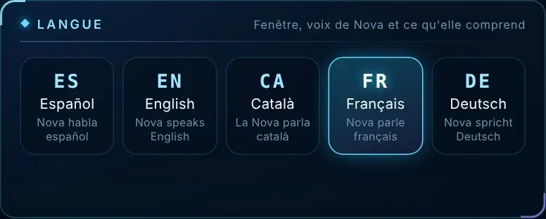
Cliquez sur la carte de votre langue. La fenêtre se recharge et tout change : les textes, la voix de Nova, ce qu'elle comprend, ses commandes vocales, les hologrammes et ce manuel. Vous pouvez aussi la choisir sur le premier écran de l'installateur, qui vous propose celle de Windows.
Nova vous vouvoie toujours : señor, sir, senyor, monsieur, Herr… (à changer dans Nova › Identité › Comment elle vous appelle).
| Langue | « Où puis-je acheter un P4-AR ? » | « Sors le train d'atterrissage » |
|---|---|---|
| English | "Where can I buy a P4-AR?" | "Lower the landing gear" |
| Català | «On puc comprar un P4-AR?» | «Baixa el tren» |
| Français | «Où puis-je acheter un P4-AR ?» | «Sors le train» |
| Deutsch | «Wo kann ich ein P4-AR kaufen?» | «Fahrwerk ausfahren» |
LIVE\data\Localization\<langue>\global.ini.global.ini.antes_de_nova), règle g_language dans user.cfg et s'en sert pour comprendre les alertes du jeu dans votre langue.spanish_(latin_america).Vérifie depuis votre PC, sans ouvrir le navigateur, que chaque page utilisée par Nova répond (UEX, wiki, scmdb, VerseGuide, StarMap, spviewer, CStone, SC Haulers, RSI…). Vert : répond · jaune : lente · rouge : ne répond pas.
Dans l'en-tête de la fenêtre, vous avez 🔎 Rechercher un réglage… (ou appuyez sur Ctrl+F). Tapez une partie du nom d'une option (épaisseur, microphone, thème…) : elle vous montre où elle se trouve et, avec Entrée ou un clic, vous y emmène et la met en évidence.
.novacopia ce que vous cochez : réglages, commandes vocales, mémoire et dictionnaire, et journal de bord. Elle n'inclut jamais vos clés d'IA ni votre webhook Discord.datos\copias, et les chemins propres à ce PC (dossier du jeu, micro…) sont conservés.nova.log) et les commandes d'usine. Réglages › Repartir de zéro efface ce que Nova a appris sur vous et revient à la configuration initiale.Depuis la version 1.4, quand vous fermez la fenêtre, Nova ne s'éteint pas : elle reste dans la zone de notification de Windows, près de l'horloge (parfois dans la petite flèche ^). Elle continue d'écouter, l'overlay reste dans le jeu et les minuteurs continuent de vous prévenir. La première fois, Windows affiche un avis pour que vous sachiez où elle est.
Ouvre la fenêtre (ou la ramène au premier plan si elle était déjà ouverte).
Ouvrir NOVA AI, Couper le micro (MUTE), Mode veille et Quitter NOVA AI, qui la ferme complètement.
Envoie la fenêtre dans la zone de notification aussitôt. ⏻ éteint toujours Nova.
Si vous passez un moment sans lui parler, Nova se repose : elle cesse d'écouter et l'overlay s'assombrit en respirant lentement. Les minuteurs et les alertes du jeu continuent de fonctionner.
Après la configuration initiale (ou la première fois que vous ouvrez la 1.4), Nova vous montre en une minute où se trouve chaque option : le Cockpit, le bouton pour parler, le mode veille, le MUTE et chaque section.
Avancez avec SUIVANT ou les flèches, et sortez avec QUITTER ou Échap. Pour la refaire : Réglages › Général › Visite guidée.
Le bouton Questionnaire, sous « Consulter le manuel », ouvre huit questions notées de 1 à 10 (ou N/S si vous n'utilisez pas cette partie) et une zone pour vos idées.
Une clé d'API est comme un mot de passe qui permet à Nova d'utiliser un service d'intelligence artificielle en votre nom. Certaines versions de NOVA AI incluent des clés d'essai (pas celle de GitHub), mais elles ont une limite quotidienne partagée par tous les utilisateurs du programme. Avec la vôtre, vous aurez tout le quota pour vous. Elles sont gratuites et s'obtiennent en deux minutes.
| Service | Pour quoi | Coût | Commence par |
|---|---|---|---|
| Gemini | Le cerveau principal de Nova. | Gratuit, sans carte bancaire | AIza… ou AQ.… |
| Groq | Secours ultra-rapide et reconnaissance vocale dans le cloud. | Gratuit, sans carte bancaire | gsk_… |
| OpenRouter | Beaucoup de modèles gratuits en secours. | Gratuit (50 requêtes/jour) | sk-or-v1-… |
| Mistral | IA européenne. Facultatif : ne fait plus partie de la chaîne par défaut. | Payant (depuis août 2026) | pas de préfixe fixe |
Le bouton OBTENIR UNE CLÉ de chaque service ouvre directement sa page de clés.
Google indique qu'avec l'offre gratuite il peut utiliser ce que vous envoyez pour améliorer ses produits.
gsk_…) : elle ne s'affiche qu'une fois.gpt-oss-120bAvec Groq, vous aurez aussi la reconnaissance vocale la plus rapide (moteur « Automatique » dans Nova › Écoute).
sk-or-v1-…) avant de fermer la fenêtre.Utilisez les modèles se terminant par :free ou openrouter/free, qui en choisit un gratuit disponible.
Depuis août 2026, Mistral est payant ou sur abonnement : la 2.0 l'a donc retiré de la chaîne de moteurs par défaut. Il reste une option à votre choix :
mistral-small-latest).Si vous aviez déjà une clé DeepSeek (payante), Nova continue de l'utiliser.
| Si… | Essayez ceci |
|---|---|
| Elle ne m'entend pas | Si le noyau affiche MODE VEILLE, appuyez sur votre touche ou sur ☀. Vérifiez que le bouton MUTE de l'indicateur est sur OFF et que votre casque n'est pas coupé. Choisissez votre micro dans Nova › Écoute : elle vous y signale s'il n'arrive que du silence. Augmentez la sensibilité ou le gain si vous parlez doucement. |
| Elle se déclenche toute seule | Baissez la sensibilité ou désactivez « Écouter sans touche ». Si c'est une forme apprise de son nom, retirez-la avec Oublier. |
| Elle ne réagit pas à son nom | Refaites l'entraînement dans Nova › Identité. Choisissez un nom de 2 ou 3 syllabes qui ne soit pas un mot courant. |
| Le jeu ne reçoit pas les touches | Si vous lancez Star Citizen en administrateur, lancez aussi Nova en administrateur. Activez « Appuyer sur les touches uniquement avec le jeu au premier plan ». |
| Une touche ne fonctionne pas | ⟳ Synchroniser maintenant et regardez « Voir les détails ». Si l'action n'est que sur votre HOTAS, donnez-lui aussi une touche du clavier. |
| « Tous mes moteurs n'ont plus de quota » | Ajoutez vos propres clés (section 11) ou attendez le lendemain. |
| Nova s'entend elle-même | Utilisez un casque. Le micro devient déjà sourd pendant que Nova parle. |
| L'overlay ne s'affiche pas | Mettez le jeu en « Fenêtre sans bordure ». Essayez « ◆ Tester à l'écran » et vérifiez l'écran choisi. |
| L'hologramme ne s'affiche pas ou n'a pas de son | Comme pour l'overlay : « Fenêtre sans bordure ». Vérifiez Hologrammes activés et cliquez sur Tester. Pour le son : Sons des hologrammes, leur volume et la Sortie audio. |
| La description de l'hologramme apparaît en anglais | Activez Traduire les descriptions et vérifiez que vous avez un moteur d'IA avec du quota (section 09). Elle sera traduite la prochaine fois. |
| Un joueur apparaît comme pilote PNJ | RSI n'a aucune fiche à ce nom (ou la vérification a échoué). Cherchez-le à la main : « cherche-moi un joueur ». |
| La mise à jour ne s'installe pas | Acceptez l'autorisation de Windows (UAC). En cas d'échec, téléchargez l'installateur depuis GitHub (Releases) et lancez-le : il conserve vos données. |
| Le message ne s'écrit pas dans le chat | Dans Jeu SC › Chat du jeu : touches f12 / enter / f12 et « Touches, lettre par lettre ». S'il saute des lettres, augmentez la vitesse d'écriture ou l'attente. |
| La fiche n'arrive pas sur Discord | Regardez le message du Cockpit ou « Dernière publication » dans Informations › Discord : il indique ce que Discord a répondu. Si le webhook n'existe pas, créez-en un nouveau et collez-le. Envoyer une fiche de test le vérifie. |
| Une définition est fausse ou ancienne | Dites « Nova, mets à jour la fiche de X » ou corrigez-la vous-même dans le Dictionnaire de consultations (Réglages › Fichiers). |
| Nova ne répond à rien | Elle est peut-être arrêtée (overlay en rouge) : rallumez l'interrupteur du Cockpit ou dites « Nova, active-toi ». |
| Les hologrammes sont difficiles à lire | Augmentez l'épaisseur dans Écran › Hologrammes › Épaisseur des lettres (Très épaisse), essayez le modèle Tactique, plus sombre, ou augmentez l'opacité. |
| La traduction n'apparaît pas | Redémarrez le jeu. Vérifiez le dossier dans Jeu SC › Langue du jeu et réinstallez la traduction. |
| La fenêtre ne s'ouvre pas | Nova utilise Edge. Si vous ne l'avez pas, ouvrez dans votre navigateur l'adresse de ui_puerto.txt (dossier de données). Si la fenêtre est fermée, cherchez-la dans la zone de notification de Windows. |
| Elle se ferme au démarrage | NOVA AI.exe vous affiche l'erreur. Pour plus de détails, ouvrez DEPURAR.bat dans le dossier du programme, ou consultez fallos.log dans votre dossier de données. |
| L'installateur ne s'ouvre pas | Il vous indique la raison et le journal (%TEMP%\NOVA_AI_Setup.log). En dernier recours, INSTALAR_CONSOLA.bat depuis Nova.zip. |
%LOCALAPPDATA%\NOVA AI\datos. Pas de serveurs propres, pas de comptes, pas de télémétrie.Le texte complet se trouve dans NORMAS_Y_PRIVACIDAD.fr.md, que vous avez accepté à l'installation.
Jeu loyal : Nova appuie sur des touches comme VoiceAttack ; vous êtes responsable du respect des conditions de Star Citizen. L'IA peut se tromper (et si elle invente quelque chose, elle l'avoue). Les clés d'essai (si votre version en contient) sont partagées : ne les copiez pas dans d'autres programmes.
| Développement | Aaron B. Roldan · gametag 0zzyt0 · avec le moteur d'IA Claude Opus 5.5 (Anthropic) |
| Remerciements | Org Defcorp · Faibo, Galleg0, Sr.Scott, AlpacaInTrouble, Lother et bien d'autres |
| Licence | Licence MIT (logiciel libre) : utilisez-le, modifiez-le et partagez-le en conservant l'avis de copyright (LICENSE) |
| Langue du jeu | 0zzyt0 et la communauté |
| Données du jeu | Pages communautaires : voir « Merci à la communauté » (section 14) |
| Formats du Game.log | Projets communautaires all-slain et sc-assistant (licence MIT) |
| Moteurs d'IA et de voix | Google Gemini, Groq, OpenRouter, Mistral, Microsoft Edge, Piper, Whisper |
NOVA AI ne serait pas possible sans ces projets communautaires. Tout le mérite de leurs informations revient aux personnes qui les créent et les maintiennent, souvent sur leur temps libre. S'ils vous sont utiles, rendez-leur visite et soutenez-les.
| Page | Leur mérite et leurs droits |
|---|---|
| Star Citizen Wiki starcitizen.tools | L'encyclopédie de la communauté : lore, vaisseaux, armes et lieux. Textes de leurs auteurs sous licence CC BY-SA. |
| UEX Corp uexcorp.space | Prix des marchandises, routes commerciales, vaisseaux et raffineries, mis à jour chaque jour par ses utilisateurs. |
| SCMDB scmdb.net | Missions, récompenses, plans de fabrication et minage de chaque patch. Données sous licence CC BY-NC-ND 4.0. |
| VerseGuide verseguide.com | Fiches de planètes, lunes et lieux planétaires. |
| StarMap starmap.space | Planètes, stations et des milliers de lieux avec coordonnées et services, et son API publique gratuite. |
| SC Ships Performances Viewer spviewer.eu | Performances des vaisseaux : carburant, autonomie, condensateurs et composants. |
| Universal Item Finder finder.cstone.space | Par Meepowski (CStone) : où acheter chaque objet du 'verse, avec des données fournies par la communauté. |
| SC Haulers schaulers.com | Calculateurs de routes, de cargaison et de missions de transport pour l'industrie. |
| Roberts Space Industries robertsspaceindustries.com | Fiches publiques de citoyens et d'organisations, et état des serveurs. |
| Langue du jeu | 0zzyt0 et contributeurs ; textes du jeu de Cloud Imperium Games. |
| Google Translate · DuckDuckGo | Traductions et recherches web. |
Chaque page appartient à ses auteurs et a ses propres conditions d'utilisation. NOVA AI se contente de les consulter en ligne (ou via leurs API publiques), comme vous le feriez depuis votre navigateur : elle ne modifie pas leurs données, ne les redistribue pas (ce qui est téléchargé reste sur votre ordinateur) et ne s'en attribue pas la paternité.